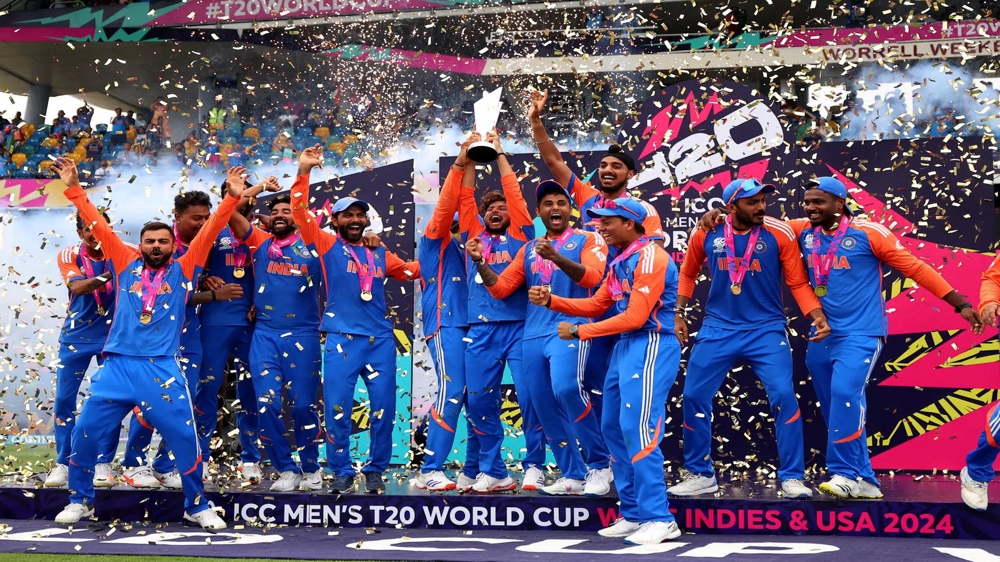

The India men's national cricket team represents India in men's international cricket. It is governed by the Board of Control for Cricket in India (BCCI), and is a Full Member of the International Cricket Council (ICC) with Test, One Day International (ODI) and Twenty20 International (T20I) status.The team played its first international match on 25 June 1932 in a Test against England at Lord's Cricket Ground in London, becoming the sixth team to be granted Test cricket status. India's first Test victory was in 1952.
